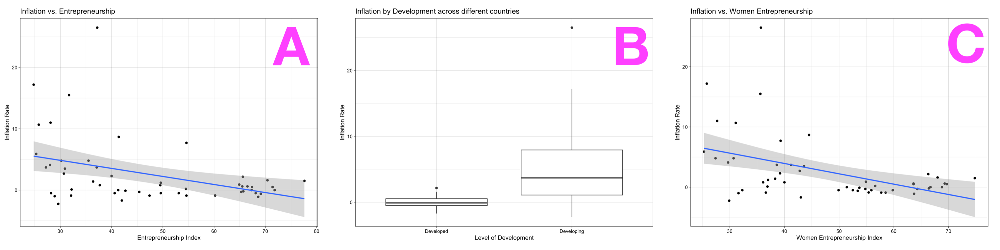
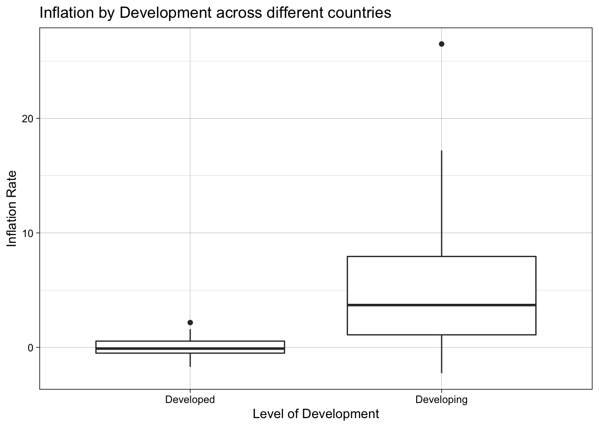
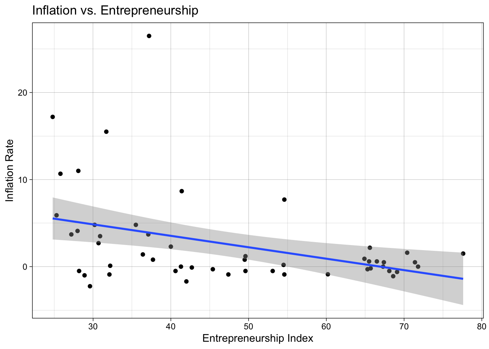
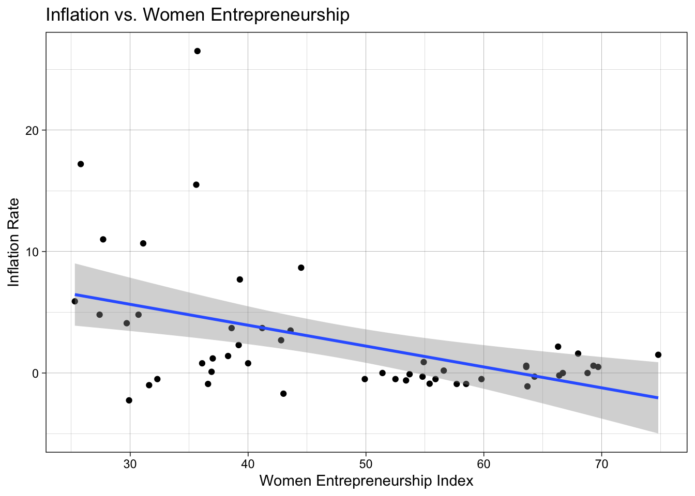

Module 16 Analysis Reporting
Your data analysis is as good as your analysis reporting. You need to make sure you are communicating your data analysis results in a way that makes sense to all of your stakeholders. Claus Wilke makes the point that the “goal in telling a story should be to use facts and logical reasoning” (Wilke 2019). That way, you not only make your point, but your point will be remember longer and better.
16.1 Types of stories
- Lead–Development–Resolution
- Action–Background–Development–Climax–Ending
- Opening–Challenge–Action–Resolution
If you want more details about these, see Chapter 29 of Claus Wilke’s book (Wilke 2019).
16.2 Telling a story
In this module, we will study how multiple tables and plots should be strung together in a story that illustrates the point you want to drive. The simplest way to tell a story is by presenting your visualizations in a challenge-resolution way. What’s the lead? What’s the development? What’s the resolution for the following data analysis?

16.2.1 How to tell the story
The data we are using for this module was obtained from Kaggle’s Women Entrepreneurship and Labor Force.
library(janitor)
library(knitr)
library(tidyverse)
# data from https://www.kaggle.com/babyoda/women-entrepreneurship-and-labor-force
# read data in and clean column names
women_labor_force_data <- read_delim("data/women_in_labor_force.csv",
delim = ";") %>%
clean_names()## Parsed with column specification:
## cols(
## No = col_double(),
## Country = col_character(),
## `Level of development` = col_character(),
## `European Union Membership` = col_character(),
## Currency = col_character(),
## `Women Entrepreneurship Index` = col_double(),
## `Entrepreneurship Index` = col_double(),
## `Inflation rate` = col_double(),
## `Female Labor Force Participation Rate` = col_double()
## )## Rows: 51
## Columns: 9
## $ no <dbl> 4, 6, 17, 18, 19, 20, 22, 28, 3…
## $ country <chr> "Austria", "Belgium", "Estonia"…
## $ level_of_development <chr> "Developed", "Developed", "Deve…
## $ european_union_membership <chr> "Member", "Member", "Member", "…
## $ currency <chr> "Euro", "Euro", "Euro", "Euro",…
## $ women_entrepreneurship_index <dbl> 54.9, 63.6, 55.4, 66.4, 68.8, 6…
## $ entrepreneurship_index <dbl> 64.9, 65.5, 60.2, 65.7, 67.3, 6…
## $ inflation_rate <dbl> 0.90, 0.60, -0.88, -0.20, 0.00,…
## $ female_labor_force_participation_rate <dbl> 67.10, 58.00, 68.50, 67.70, 60.…# boxplot of level of development (binary) vs inflation rate
women_labor_force_data %>%
ggplot(aes(x = level_of_development,
y = inflation_rate)) +
geom_boxplot() +
theme_linedraw() +
labs(x = "Level of Development",
y = "Inflation Rate",
title = "Inflation by Development across different countries")
# scatterplot with regression line of inflation rate
# vs entrepreneurship index
women_labor_force_data %>%
ggplot(aes(y = inflation_rate,
x = entrepreneurship_index)) +
geom_point() +
geom_smooth(method = "lm",
formula = y ~ x) +
theme_linedraw() +
labs(x = "Entrepreneurship Index",
y = "Inflation Rate",
title = "Inflation vs. Entrepreneurship")
# run regression and get summary of results
model_1 <- women_labor_force_data %>%
lm(formula = inflation_rate ~ entrepreneurship_index) %>%
summary()
# print our coefficients of regression results
model_1$coefficients %>%
kable()| Estimate | Std. Error | t value | Pr(>|t|) | |
|---|---|---|---|---|
| (Intercept) | 8.793863 | 2.1751516 | 4.042874 | 0.0001862 |
| entrepreneurship_index | -0.131373 | 0.0436008 | -3.013090 | 0.0040851 |
The relationship between inflation and entrepreneurship is negative, with inflation going down 0.13 points for each additional point in Entrepreneurship. The linear regression model for this relationship explains 14% of the variation in the data.
# scatterplot with regression line of inflation rate
# vs women entrepreneurship index
women_labor_force_data %>%
ggplot(aes(y = inflation_rate,
x = women_entrepreneurship_index)) +
geom_point() +
geom_smooth(method = "lm",
formula = y ~ x) +
theme_linedraw() +
labs(x = "Women Entrepreneurship Index",
y = "Inflation Rate",
title = "Inflation vs. Women Entrepreneurship")
# run regression and get summary of results
model_2 <- women_labor_force_data %>%
lm(formula = inflation_rate ~ women_entrepreneurship_index) %>%
summary()
# print our coefficients of regression results
model_2$coefficients %>%
kable()| Estimate | Std. Error | t value | Pr(>|t|) | |
|---|---|---|---|---|
| (Intercept) | 10.8048470 | 2.3920152 | 4.517048 | 0.0000396 |
| women_entrepreneurship_index | -0.1717811 | 0.0479573 | -3.581957 | 0.0007823 |
The relationship between inflation and women entrepreneurship is negative, with inflation going down 0.17 points for each additional point in women entrepreneurship. The linear regression model for this relationship explains 19% of the variation in the data.
16.3 Telling a story well
Here are some general guidelines for telling a story well (Wilke 2019):
- Never assume your audience can rapidly process complex visual displays: choose the simplest visualization possible.
- When you’re trying to show too much data at once you may end up not showing anything.
- When preparing a presentation or report, aim to use a different type of visualization for each distinct analysis.
16.4 Interactive dashboards
We can create interactive dashboards with the shiny package. Go to File > New File and choose Shiny Web App.... Give a name to your app (which will be the name of the folder created in your project for that app). All shiny app have their own folder and are called app.R – DO NOT change this name, that’s how RStudio knows an Shiny app is a Shiny app.
A Run App should be at the top of your app.R file. Click on it to see what happens.
Each Shiny app has two elements: the ui or user interface, and the server.
First change we are going to make is to rename the plotOutput to my_plot – we also need to make that change in the server side.
Run the app to make sure things are working fine.
Let’s change the plot that is drawn. We will reuse the box plot from this module.
server <- function(input, output) {
output$my_plot <- renderPlot({
women_labor_force_data %>%
ggplot(aes(x = level_of_development,
y = inflation_rate)) +
geom_boxplot() +
theme_linedraw()
})
}
In order for therenderPlot above to work, we need to make sure we read the data in. Also add the needed libraries to the top of your app.R (like R markdown files, Shiny apps are self-contained as it does not relly on objects in the working Environment).
library(janitor)
library(shiny)
library(tidyverse)
# read data in
women_entrepreneur_data <- read_delim("data/women_in_labor_force.csv",
delim = ";") %>%
clean_names()Run the app to make sure everything is working.
The interactivity is gone, since we do not have any input$ to change our box plot.
Let’s first replace the sliderInput with a selectInput
selectInput("variable",
"Select variable:",
c("inflation_rate",
"entrepreneurship_index"))Run the app to make sure we didn’t break anything.
Now we can add input$ to our y mapping.
output$my_plot <- renderPlot({
women_entrepreneur_data %>%
ggplot(aes(x = level_of_development,
y = input$variable)) +
geom_boxplot() +
theme_linedraw()
})Run the app.
The interactivity is there, but there’s a problem with the plotting. The problems comes from the fact that input$variable is a string, not a variable. We can fix that by using aes_string instead for the aesthetics mapping.
output$my_plot <- renderPlot({
women_entrepreneur_data %>%
ggplot(aes(x = level_of_development)) +
geom_boxplot(aes_string(y = input$variable)) +
theme_linedraw()
})CHALLENGE:
Add another plot output, this time for the scatterplot. What interactivity can you add to it?
16.5 FINAL PROJECT SUBMISSION
Accept the final project submission on GitHub.
Final Project is due December 16 (Wednesday) at 3:00pm
Survey 2 is also due December 16 (Wednesday) at 3:00pm
References
Wilke, Claus O. 2019. Fundamentals of Data Visualization: A Primer on Making Informative and Compelling Figures. O’Reilly Media.